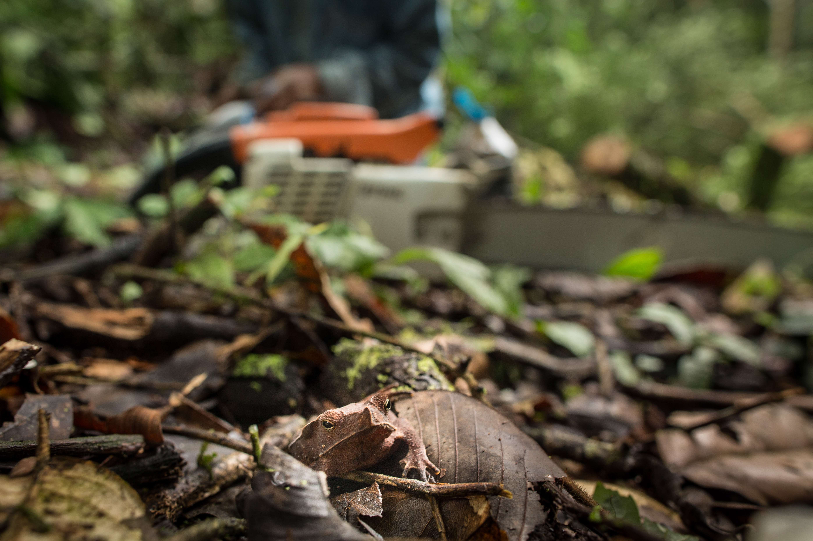
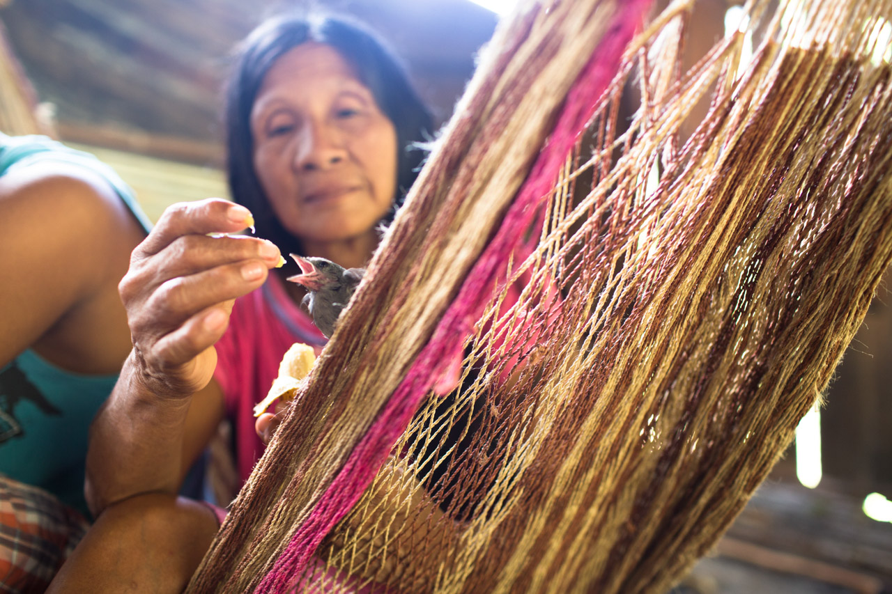

Wildlife on the Line
Due to increased human activity near Waorani communities, including hunting for profit, many animals have suffered dramatic decreases in population.

Bringing Home the Jungle
When Waorani hunters are successful, they often bring home orphaned baby animals. Unfortunately, these animals often do not survive long.

Dry Season Dilemma
Many Waorani families often rely on freshwater fishing for a main source of protein. When the river runs low, this becomes almost impossible.

When the Floods Come
When heavy rains finally begin to arrive, the river can rise up to several meters per day. The Waorani hunt many of the animals that are forced from their forest-floor cavities.